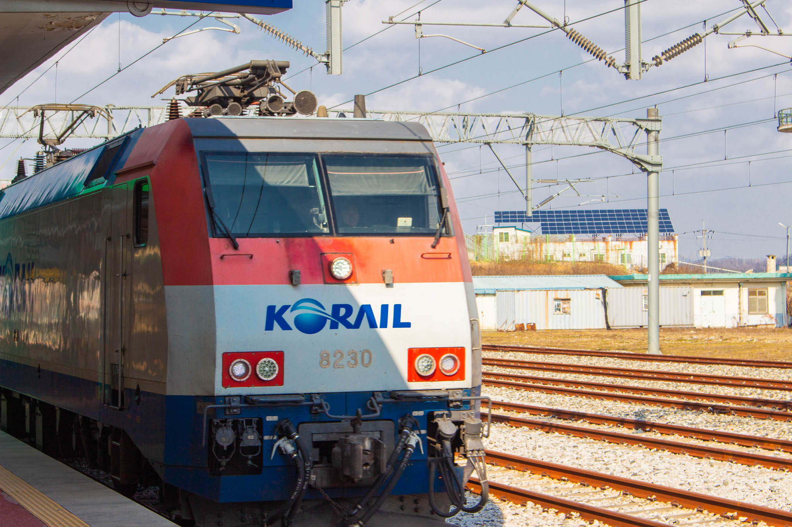

방구석 라이프를 벗어나
혼자 순천여행을 계획한건 개강을 약 1개월을 앞뒀을 때, 하루종일 방구속에 쳐박혀 아무것도 하지 않던 스스로가 한심하다는 생각이 들 때 쯤이였다. 사실 계획도 없었다. 그저 네이버로 괜찮아보이는 게스트 하우스 하나를 예약하고 가방에 짐을 눌러담은 후 전주역으로 나섰다.
열차 시간도 알아보지 않은 채, 버스를 타고 전주역에 온 후 가장 빠른 시간의 열차를 예매하고 플랫폼에 올라섰다. 지금은 상상도 못할 여행이였지만, 당시엔 국내 코로나 확진자가 20명정도에 불과했기 때문에 역에는 평일임에도 다른 여행객이 많이 보였다.
짧은 기다림 끝에 내가 탈 열차가 도착하였고, 티켓을 확인 후 열차에 몸을 실었다. 간만의 기차여행이라 그런건지 간만의 여행이라 그런건지 설렘과 걱정이 같이 느껴졌다. 기차 안 대부분의 사람이 마스크를 쓴 채로 각자의 할 일에 몰두하고 있었다.
가깝고 먼, 순천
순천은 전주에서 비교적 가까운 거리지만 갈 일이 별로 없는 도시였다. 당일치기로 가기엔 생각보다 거리가 멀었고 1박 2일로 가기엔 근처에 더 나은 관광도시인 여수가 있었다. 그래서 이번이 아니면 순천에 가기 힘들겠다 싶어 순천에 가기로 선택한 것이였다.
약 1시간 반정도가 지나 순천에 도착하였다. 순천역은 생각보다 아담했고, 안에선 도착한 사람과 떠나는 사람들이 바쁘게 움직이고 있었다. 나 또한 점심쯤에 도착했기에 원활한 여행을 위해 게스트 하우스에 짐을 맡기러 발걸음을 빠르게 옮겼다.
게스트하우스는 인터넷에서 확인했던 것처럼 아담한 크기였다. 1층에 있는 카페에서 사장님이 오늘 예약자가 한 명이라 방을 혼자 쓰게 될 것이라는 희소식과 함께 맞아주셨다. 4인실을 혼자쓰게 된것은 내 입장에서는 희소식이였지만 사장님의 입장에선 비극이였을 것이다. 나중에 조식을 먹으며 이야기를 들어보니 모처럼 조류독감이 유행하지 않아 순천만에 관광객이 많이오려나 했더니 예상치도 못한 코로나가 터졌다고 골치 아프다고 하셨다.
게스트하우스에 짐을 놓고 제일 먼저 간 곳은 근처에 있단 철도문화마을이였다. 원래의 계획은 순천만으로 바로 가는 것이였지만 순천만에 바로 가기엔 조금 애매한 시간이였기에 이곳을 먼저 들리게 되었다. 점심을 먹고 후식을 먹을 겸 근처에 있던 카페에서 고구마 라떼를 주문하여 마셨는데, 위에 올려져 있던 시나몬 가루 때문인지 여태까지 먹은 고구마 라떼중 제일 맛있었다.
카페에서 시간을 좀 보낸 후 향한 곳은 근처의 전망대 가는 길이였다. 다른 관광지에 있는 벽화마을급은 아니더라도 이쁘게 꾸며져 있는 계단이 있다고 해 굳이 찾아서까지 갔는데 굉장히 실망스러웠다. 특히 계절탓인지 코로나탓인지 나를 제외한 다른 관광객이 없어 그런지 요리조리 계단사진을 찍는 나를 뚫어져라 쳐다보는 주민 분이 있어 민망하기까지 했다. 생각보다 높은 계단을 올라가니 지은지 얼마 안된 것 처럼 보이는 전망대가 있었지만 순천이 큰 도시가 아니라 그런지 생각보다 뷰가 별로였고, 어느 지자체에서 급조한 관광지가 그렇듯 별 볼게 없어 서둘러 내려왔다. 실망스러웠던 전망대를 내려온 후에 순천만을 가기 위에 순천 시내를 흐르는 동천을 따라 걸으며 버스정류장으로 향했다.
순천만의 노을을 위해
순천만 습지에서 노을을 보기 위해선 일찍 가는게 좋다는 게스트하우스 사장님의 말을 따라 순천만 국가정원을 빠르게 스캔한뒤 순천만 습지로 향했다. 순천만 습지로 가는 길은 해가 따스해서 그런지 2월치고 별로 춥지 않아 걷기 좋았다.
모노레일에서 내려 약 20분을 걸어 도착한 순천만 습지는 하늘이 맑고 바람이 적당해 겨울임에도 정말 화사했다. 기분좋게 바람을 맞으며 걸어가다 본 표지판엔 불행한 소식이 있었다. 노을을 보기 위해선 전망대를 올라야 했고, 전망대는 생각보다 높은 곳에 있었다. 노을 사진 하나를 찍겠다고 땀을 흘리며 전망대를 올랐으나..
일찍 출발한다고 출발한 것이 너무 이른 시간이였고, 겨울에도 오후 4시는 해가 지기엔 너무 이른 시간이였다. 다시 내려가면 노을질때 쯤 전망대를 다시 올라야 한다는 생각이 내 발목을 잡았고, 결국 전망대에서 찬 바람이 부는 2시간 동안 책을 보며 어떻게든 버텨보기로 했다. 1시간도 안되어서 몸에서 산을 오를때의 온기가 빠져나갔고 책에는 집중이 안되기 시작했다. 마음속으로 지금 내려가긴 늦었어를 되내이며 어떻게든 버티려 노력하였다.